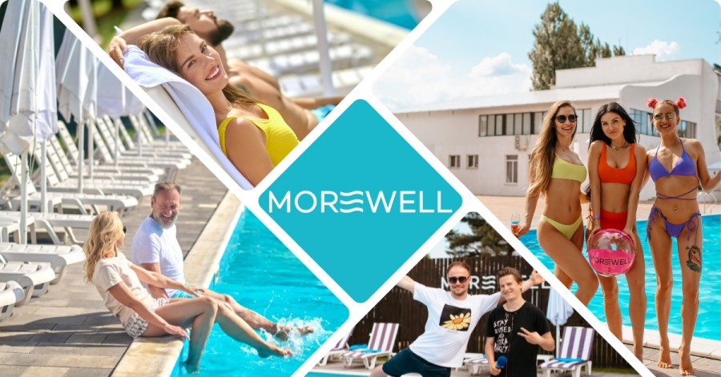
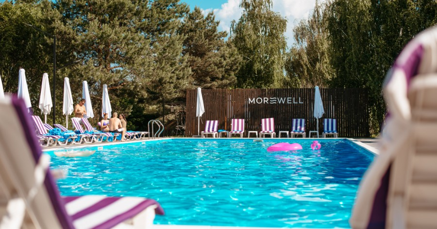
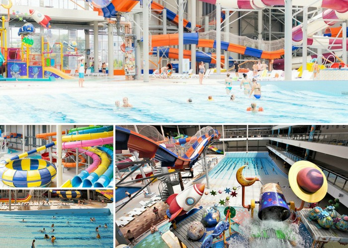
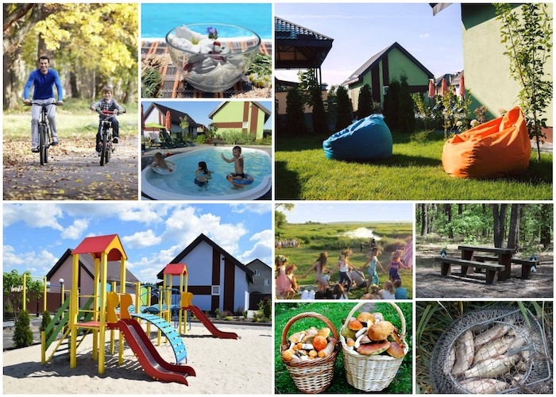
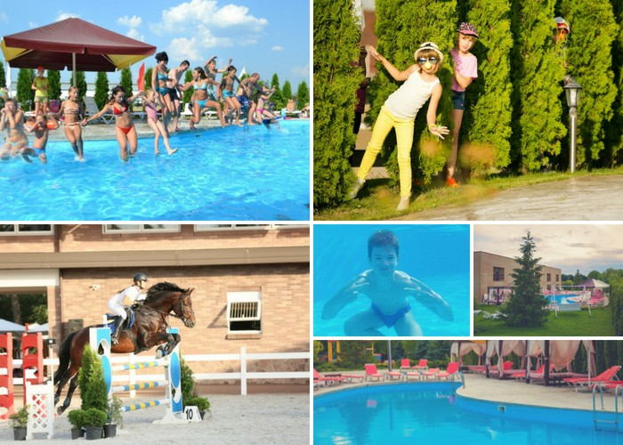
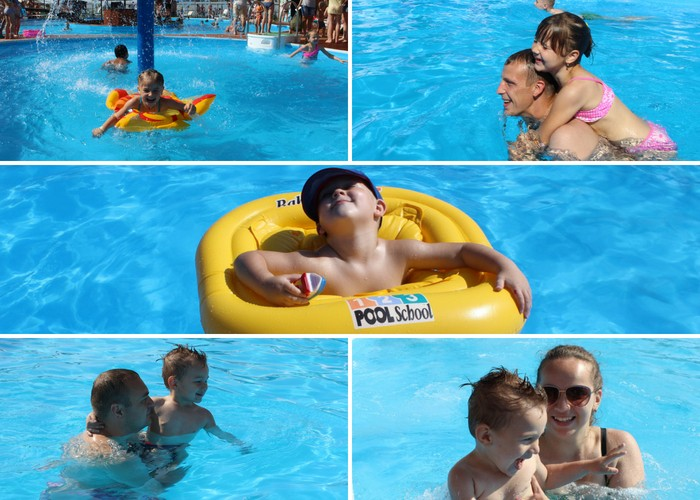

Заміський комплекс Morewell

Заміський комплекс Morewell на березі Київського моря подарує незабутній відпочинок закоханим парам, сім’ям з дітками та просто любителям відпочинку подалі від шумного міста!
Вас чекає 25-метровий літній басейн зі зручними шезлонгами і дитячою зоною. Або критий басейн з підігрівом води в будь-яку пору року. Оберіть прогулянки по Київському морю на човні або катамарані та насолоджуйтесь краєвидами та чистим свіжим повітрям.
До ваших послуг сучасний SPA-комплекс з усіма видами масажу, обгортання, антивікових програм та релаксуючого відпочинку в сауні, хамамі та джакузі. Діти до 7 років можуть відвідувати SPA зону безкоштовно (у супроводі дорослих).
У панорамному ресторані пропонують страви європейської та чорноморської кухні в поєднанні з приголомшливим видом на Київське море. Для гурманів шашлику і стейка на території MOREWELL обладнаний мангал-парк.

В комплексі величезний вибір розваг на будь-який смак та компанію:
- прогулянки на квадроциклах
- багі
- гідроцикли
- SUP-борди
- самокати
- велосипеди
- веломобілі
- настільний теніс
- дискотеки
- караоке
- міні зоопарк
Поки ви зайняті релаксом для душі, ваші діти поринуть у величезний світ радості та веселощів! Команда аніматорів проведе з ними захопливі квести, ігри, конкурси. Щасливі емоції для вас і ваших діток — головна мета будь-якого відпочинку! Хочете повернутися після вихідних бадьорим і підкорювати нові вершини? Тоді сміливо в Morewell!
Аквапарк «Термінал»

Аквапарк «Термінал» — це територія водних розваг та активного відпочинку на будь-який смак. Величезна площа аквапарку під скляним розсувним дахом вміщує до 1500 осіб без втрат для особистого комфорту. Одинадцять водних гірок — від водних аналогів американських гірок до екстремальних, майже вертикальних, спусків — здатні зарядити здоровим адреналіном та подарувати відвідувачам неймовірні враження. А завдяки розсувному даху, що відкритий усе літо, відпочиваючі отримують природну засмагу та такий важливий вітамін D.
На території аквапарку є хвильовий басейн, в якому можна гойдатися на заспокійливих хвилях майже як у морі, а часом і спробувати подолати й такі, що півтора метра заввишки!
Для шанувальників спокійного відпочинку в аквапарку є басейн для плавання, джакузі та гідромасажні зони, затишна SPA-зона із російською, турецькою, фінською та римською саунами. Великий окремий дитячий майданчик дозволяє планувати відпочинок в аквапарку «Термінал» сім’ям із дітьми навіть наймолодшого віку.
Еко-комплекс «Перлина Дзвінкова»

Неподалік від Києва, в селі Дзвінкове, посеред мальовничого лісу, знаходиться база відпочинку «Перлина Дзвінкова». Чисте повітря, річка, джерельна вода зцілять не тільки тіло, а й душу. Чисте повітря – це здоровий організм і для дорослих, і для дітей.
На території бази знаходиться власна свердловина. А поблизу комплексу, в селі Дзвінкове, є справжнє цілюще природне джерело. Це така ж візитна картка села, як і його природний ландшафт. Корисність води даного джерела підтверджена науковими і лабораторними дослідженнями. Свіже повітря, смачна їжа, приємне обслуговування та помірні ціни допоможуть розслабитися і набратися нових сил для робочих буднів. Тут ви зможете повноцінно відпочити, оздоровитися і залишити на пам’ять багато щасливих моментів!
Вся територія бази відпочинку знаходиться під цілодобовою охороною, а парковка обладнана системою
відеоспостереження.
«Перлина Дзвінкова» - це заміський відпочинок в усі пори року!
Кінний клуб «DERGACHOV»

Сімейний кінний клуб «DERGACHOV» — це сучасний комплекс європейського рівня, що спеціалізується на послугах з розвитку та популяризації кінного спорту, активного відпочинку, дитячого відпочинку, екологічно чистого харчування.
Кінний клуб «Dergachov» пропонує своїм клієнтам відпочинок біля басейну на свіжому повітрі. Є літня веранда з шезлонгами і ресторан, в меню якого — європейська та японська кухня. Є окремий басейн для найменших.
Зоопарк «XII Місяців»
З кожним днем літо набирає обертів! Зоопарк «XII Місяців» — ідеальне місце для веселих вихідних з сім’єю на свіжому повітрі.
Для дітей тут завжди знайдеться маса цікавих розваг:
Загальна площа комплексу — понад 1000 м². Все облаштоване для максимально комфортного відпочинку: роздягальні, вбиральні, душові, а також є можливість взяти в оренду лежак зі свіжим рушником та придбати одноразові капці. По периметру басейнів встановлено сучасні системи фільтрації та автоматичної дозації хлору і жорсткості води (pH). На території комплексу працюють досвідчені працівники, які слідкують за безпекою відвідувачів та чистотою басейну.